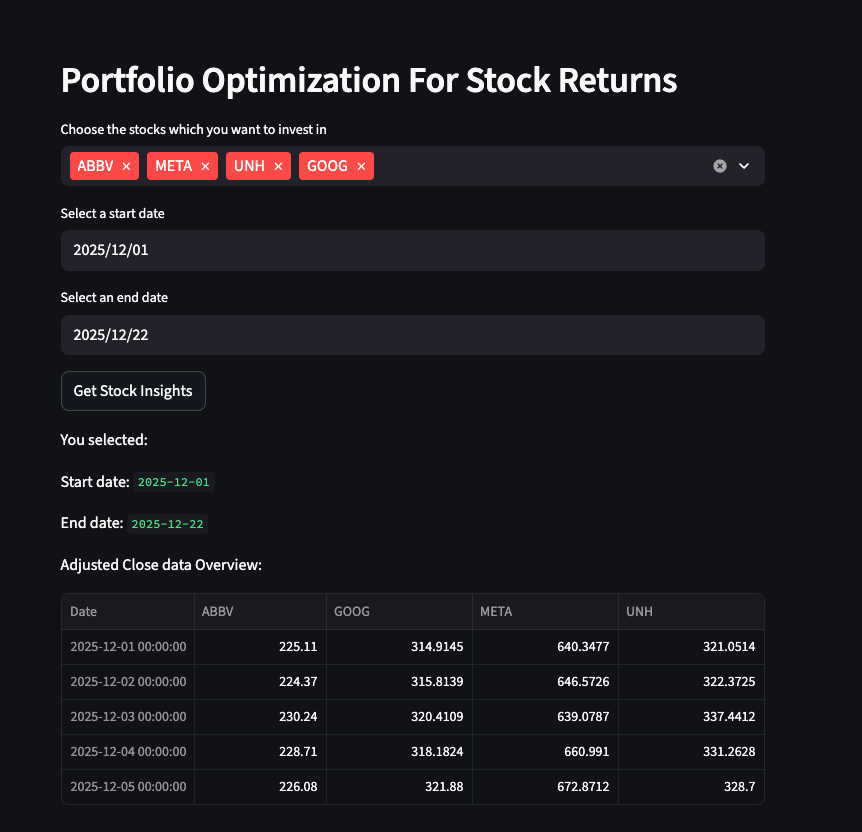
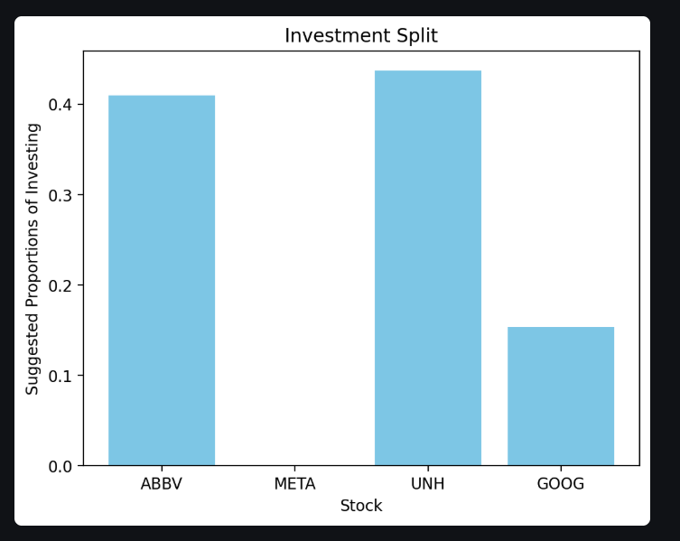

← Back to Portfolio
Markovitz Portfolio for Optimal Investment Split
Portfolio Optimization App for ideal investment allocation across stocks to minimize risk.
Overview
Markowitz Portfolio is a framework for investors to assist them in making investing decisions. It builds a portfolio that balances risk and returns.
Risk Vs Returns : Markowitz’s modern portfolio theory believes that the investors prefer more returns, and are risk averse.
Concept of Diversification: Markowitz portfolio emphasizes of diversification of assets. Assume a basket full of eggs. If the basket is dropped, we would lose all the eggs (A big loss). The investing game works the same way. Imagine if you keep the eggs in different baskets. Even if one basket drops, you still got the others.
Demo


Screenshots showing the app interface, stocks selection, and optimal investment split results:
Key Features
Multi-Stock Selection
Choose from 30+ major stocks across tech, finance, healthcare, and energy sectors
Markowitz Optimization
Uses Modern Portfolio Theory to calculate optimal weights for minimum variance
Real-Time Data Analysis
Fetches historical stock data from Yahoo Finance for accurate calculations
Visual Investment Breakdown
Clear bar charts showing recommended allocation percentages for each stock
How It Works
-
1
Select Stocks
Choose at least 2 stocks from the dropdown menu (AAPL, MSFT, NVDA, etc.)
-
2
Set Date Range
Define the historical period for analysis using start and end date pickers
-
3
Data Collection
App downloads historical closing prices from Yahoo Finance and validates data quality
-
4
Portfolio Optimization
Calculates annualized returns and covariance matrix, then solves for minimum variance portfolio
-
5
Display Results
Shows optimal allocation percentages with visual bar chart for easy interpretation
Technical Architecture
Optimization Model
- Algorithm: Markowitz Mean-Variance Optimization
- Solver: CVXOPT quadratic programming solver
- Objective: Minimize portfolio variance (risk)
- Constraints: Non-negative weights, sum of weights equals 1
- Returns: Annualized (252 trading days per year)
Data Processing
- Data Source: Yahoo Finance API via yfinance library
- Validation: Automatic detection and handling of missing data
- Calculations: Daily percentage returns converted to annual metrics
- Regularization: Small epsilon added to covariance matrix for numerical stability
- Error Handling: Comprehensive validation at each step with user-friendly messages
Technologies Used
Python
Streamlit
NumPy
Pandas
CVXOPT
yfinance
Matplotlib
Yahoo Finance API
Mathematical Foundation
The app implements Markowitz Portfolio Theory, solving the following optimization problem:
Minimize: ½ wT Σ w
Subject to: Σwi = 1, wi ≥ 0
- w: Vector of portfolio weights (allocation percentages)
- Σ: Covariance matrix of asset returns (risk measure)
- Objective: Find weights that minimize overall portfolio variance
- Result: Optimal diversification based on historical correlations
Impact & Benefits
- Applies Nobel Prize-winning Modern Portfolio Theory for scientifically-backed investment strategy
- Reduces portfolio risk through optimal diversification based on historical correlations
- Eliminates guesswork by using mathematical optimization instead of intuition
- Supports diverse investment choices across multiple sectors and market caps
- Provides instant analysis of complex financial data with clear visualizations
- Free and accessible tool for retail investors to implement institutional-grade portfolio optimization
- Validates data quality and alerts users to any issues before calculation
Ideal Use Cases
Long-Term Investors
Build a diversified portfolio with optimal risk-return balance for retirement or wealth building
Students & Learners
Understand portfolio theory concepts with hands-on experimentation and real market data
Financial Advisors
Quick tool for demonstrating diversification benefits to clients with visual results
Portfolio Rebalancing
Periodically reassess optimal allocations as market conditions and correlations change